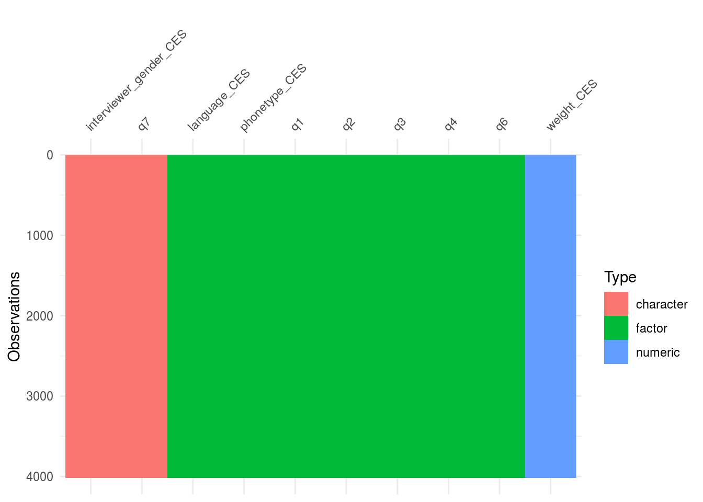
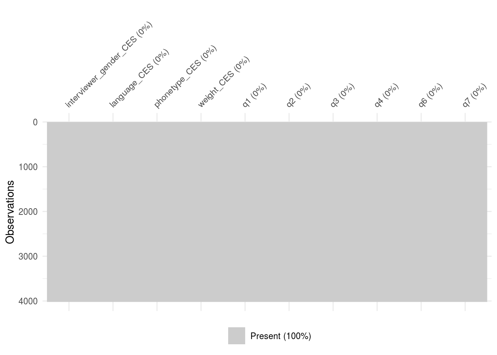
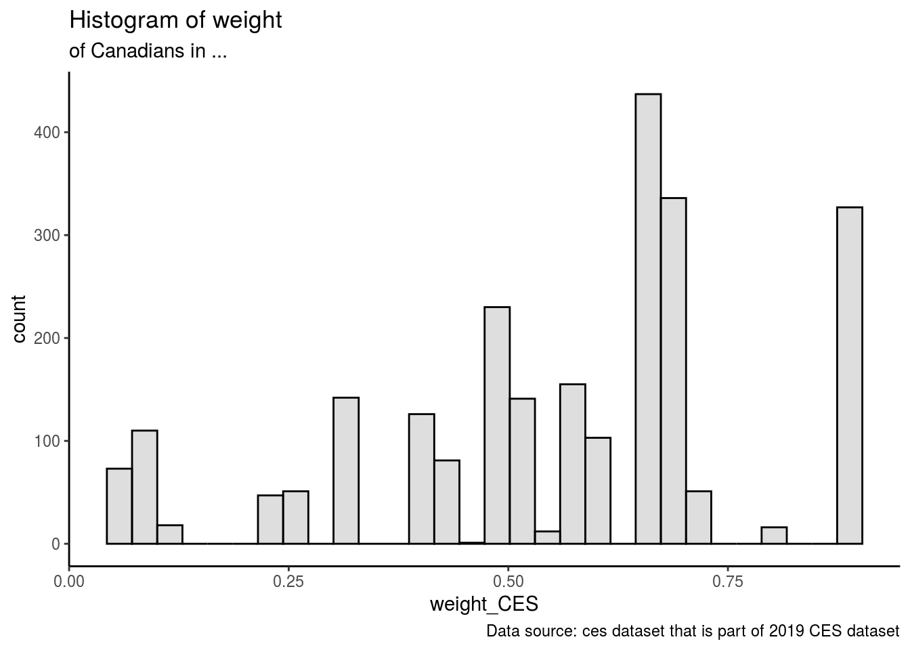
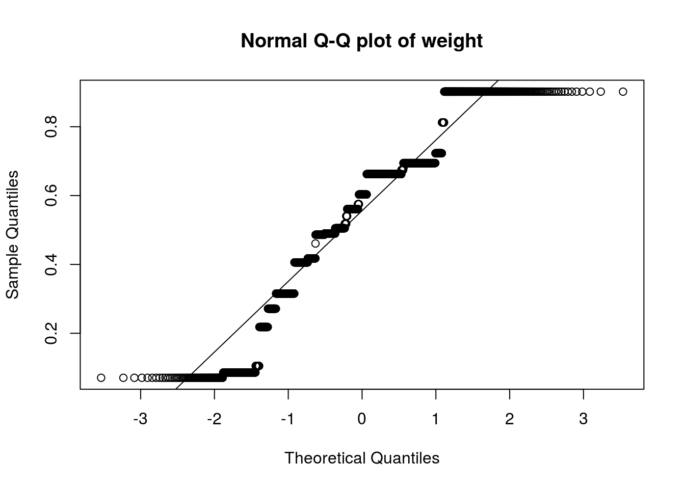
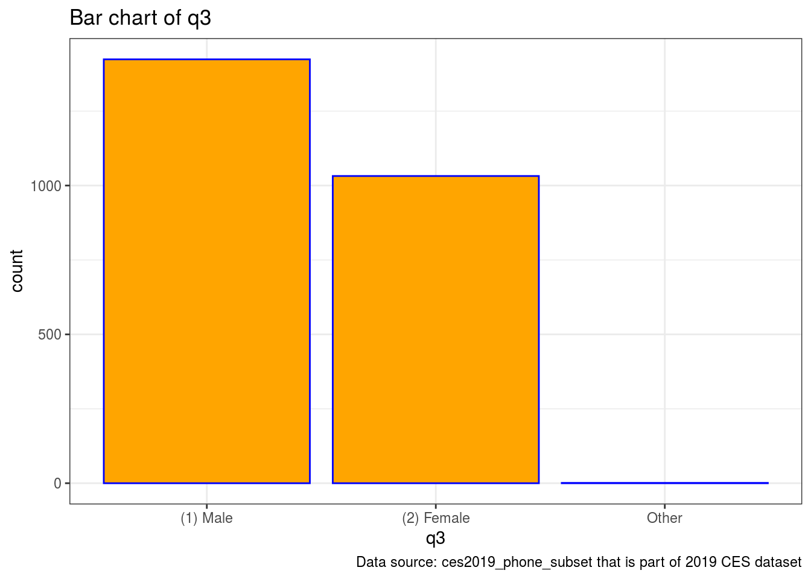
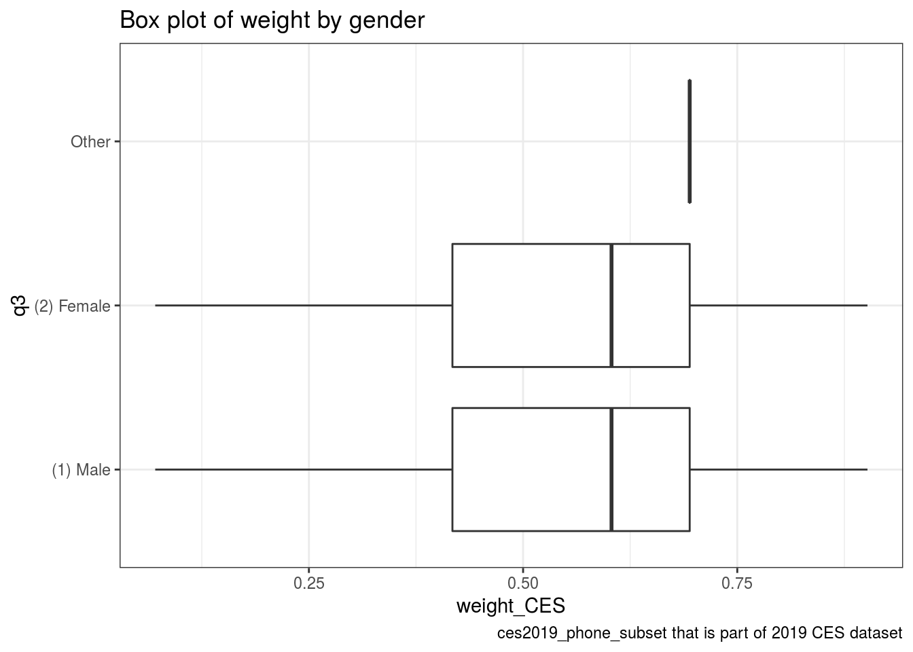

We use R Core Team (2020) and ‘R’ package Wickham et al. (2019) to do the analysis
https://github.com/hanfeixue212/sta304.git
#abstract Canada 2020 population is estimated at 37,742,154 people at mid year according to UN data. Canada population is equivalent to 0.48% of the total world population. Canada ranks number 39 in the list of countries (and dependencies) by population. In 2019, there were about 5.16 million males and 5.07 million females between the ages of 25 and 44 living in Canada, which was the most out of any age group. The next largest age group was between the ages of 45 and 64, with 5.04 million males and 5.12 million females
Base on that, the relationship of weight of the population in each province and gender can be found through the study. In the study, the subset of the 2019 CES dataset which is part of 2019 Canadian Elections Survey was selected while analyzing data. According to the weight and gender (male, female and other), we can know that gender and weight are not associated in Canada.
The weight and gender were selected, and they are not associated. However, other variables may affect weight such as languages, phone type, province and etc. Also, missing information need to be found which could potentially affect the results. In the future, a regression model can be built for better explaining the relationship between the weight and gender.
introduction In the 2019 Canadian Election Study, the population of adult in Canada was defined through telephone survey. The sample component for the 2019 Canadian Election Study was designed to represent the adult population of Canada defined as: Canadian citizens 18 years of age or older who reside in one of the ten Canadian provinces (thus excluding the territories). Because the initial survey (the CPS) was conducted by telephone, the small proportion of households in Canada without landline or wireless telephones were excluded from the sample population. The ‘ces’ data set is a subset of the 2019 CES phone survey.
#Variables in the ces2019_phone_subset have been selected below:
#The ‘ces’ data set is a subset of the 2019 CES phone survey.
cesR::get_ces("ces2019_phone")## TO CITE THIS SURVEY FILE:
##
## - Stephenson, Laura B; Harell, Allison; Rubenson, Daniel; Loewen, Peter John, 2020, '2019 Canadian Election Study - Phone Survey', https://doi.org/10.7910/DVN/8RHLG1, Harvard Dataverse, V1, UNF:6:eyR28qaoYlHj9qwPWZmmVQ== [fileUNF]
##
## - Stephenson, Laura, Allison Harrel, Daniel Rubenson and Peter Loewen. Forthcoming. 'Measuring Preferences and Behaviour in the 2019 Canadian Election Study,' Canadian Journal of Political Science.
##
## LINK: https://dataverse.harvard.edu/dataset.xhtml?persistentId=doi:10.7910/DVN/8RHLG1ces2019_phone <- to_factor(ces2019_phone)
head(ces2019_phone)## # A tibble: 6 x 278
## sample_id survey_end_CES survey_end_mont… survey_end_day_… num_attempts_CES
## <dbl> <chr> <dbl> <dbl> <dbl>
## 1 18 2019-09-23 15… 9 23 5
## 2 32 2019-09-12 18… 9 12 1
## 3 39 2019-09-10 18… 9 10 1
## 4 59 2019-10-10 15… 10 10 6
## 5 61 2019-09-12 16… 9 12 1
## 6 69 2019-09-17 17… 9 17 1
## # … with 273 more variables: interviewer_id_CES <dbl>,
## # interviewer_gender_CES <chr>, language_CES <fct>, phonetype_CES <fct>,
## # survey_end_PES <chr>, survey_end_month_PES <fct>, survey_end_day_PES <fct>,
## # num_attempts_PES <fct>, interviewer_id_PES <fct>,
## # interviewer_gender_PES <chr>, language_PES <fct>, phonetype_PES <fct>,
## # mode_PES <fct>, phone_type <fct>, weight_CES <dbl>, weight_PES <fct>,
## # c1 <fct>, c2a <fct>, c3 <fct>, q1 <fct>, q2 <fct>, q3 <fct>, q4 <fct>,
## # q6 <fct>, q7 <chr>, q72 <chr>, q73 <chr>, q74 <chr>, q8 <fct>, q8_70 <chr>,
## # q9 <fct>, q10 <fct>, q11 <fct>, q11_70 <chr>, q12 <fct>, q12_70 <chr>,
## # q13 <fct>, q14 <fct>, q15 <fct>, q16 <fct>, q17 <fct>, q18 <fct>,
## # q19 <fct>, q20 <fct>, q21 <fct>, q22 <fct>, q23 <fct>, q24 <fct>,
## # q25 <fct>, q27_a <fct>, q27_b <fct>, q27_c <fct>, q27_d <fct>, q27_e <fct>,
## # q31 <fct>, q32 <fct>, q33 <fct>, q33_70 <chr>, q34 <fct>, q34_70 <chr>,
## # q35 <fct>, q35_70 <chr>, q36 <fct>, q36_70 <chr>, q37 <fct>, q37_70 <chr>,
## # q38 <fct>, q38_70 <chr>, q39 <fct>, q40 <fct>, q75 <fct>, q44 <fct>,
## # q76 <fct>, q45 <fct>, q46 <fct>, q47 <fct>, q48 <fct>, q49 <fct>,
## # q52 <fct>, q52_70 <chr>, q53 <fct>, q54 <fct>, q59 <fct>, q60 <fct>,
## # q60_70 <chr>, q77 <fct>, q43 <fct>, q61 <fct>, q62 <fct>, q62_220 <chr>,
## # q63 <fct>, q64 <fct>, q64_130 <chr>, q65 <fct>, q66a_1 <fct>, q66a_2 <fct>,
## # q66a_3 <fct>, q66a_4 <fct>, q66a_5 <fct>, q66a_6 <fct>, …#The required variables columns in the ces2019_phone_subset have been selected below:
ces2019_phone_subset <- ces2019_phone %>%
select(7, 8, 9, 20,25:30)
head(ces2019_phone_subset)## # A tibble: 6 x 10
## interviewer_gen… language_CES phonetype_CES weight_CES q1 q2 q3 q4
## <chr> <fct> <fct> <dbl> <fct> <fct> <fct> <fct>
## 1 Female (2) French (2) Wireless 0.902 (1) … 1963 (1) … (5) …
## 2 Male (1) English (2) Wireless 0.902 (1) … 1973 (1) … (5) …
## 3 Female (2) French (2) Wireless 0.902 (1) … 1994 (1) … (5) …
## 4 Female (2) French (2) Wireless 1.23 (1) … 2000 (1) … (5) …
## 5 Male (2) French (2) Wireless 0.902 (1) … 1984 (1) … (5) …
## 6 Female (2) French (2) Wireless 0.902 (1) … 1939 (1) … (5) …
## # … with 2 more variables: q6 <fct>, q7 <chr>#The name of the columns have been renamed below:
get_question("ces2019_phone_subset", "q1")## Are you a Canadian Citizen?get_question("ces2019_phone_subset", "q2")## In what year were you born?get_question("ces2019_phone_subset", "q3")## Genderget_question("ces2019_phone_subset", "q4")## In which province or territory are you currently living?get_question("ces2019_phone_subset", "q6")## On the whole, are you very satisfied, fairly satisfied, not very satisfiedget_question("ces2019_phone_subset", "q7")## Most important issue in this FEDERAL election#Here is the gragh to show the miss of data in the selected column. #The details of the column and row are displayed below.The max, min, standard deviation and quantile value are also included in the result of skim.
vis_dat(ces2019_phone_subset)
vis_miss(ces2019_phone_subset)
skimr::skim(ces2019_phone_subset)| Name | ces2019_phone_subset |
| Number of rows | 4021 |
| Number of columns | 10 |
| _______________________ | |
| Column type frequency: | |
| character | 2 |
| factor | 7 |
| numeric | 1 |
| ________________________ | |
| Group variables | None |
Variable type: character
| skim_variable | n_missing | complete_rate | min | max | empty | n_unique | whitespace |
|---|---|---|---|---|---|---|---|
| interviewer_gender_CES | 0 | 1 | 4 | 11 | 0 | 3 | 0 |
| q7 | 0 | 1 | 3 | 255 | 0 | 2174 | 0 |
Variable type: factor
| skim_variable | n_missing | complete_rate | ordered | n_unique | top_counts |
|---|---|---|---|---|---|
| language_CES | 0 | 1 | FALSE | 2 | (1): 3281, (2): 740, (3): 0 |
| phonetype_CES | 0 | 1 | FALSE | 2 | (2): 2673, (1): 1348 |
| q1 | 0 | 1 | FALSE | 1 | (1): 4021, (-9: 0, (-8: 0, (-7: 0 |
| q2 | 0 | 1 | FALSE | 79 | 195: 96, 195: 91, 195: 91, 198: 88 |
| q3 | 0 | 1 | FALSE | 3 | (1): 2272, (2): 1748, (3): 1, (-9: 0 |
| q4 | 0 | 1 | FALSE | 10 | (6): 807, (10: 804, (5): 802, (9): 282 |
| q6 | 0 | 1 | FALSE | 6 | (2): 2248, (3): 814, (1): 562, (4): 330 |
Variable type: numeric
| skim_variable | n_missing | complete_rate | mean | sd | p0 | p25 | p50 | p75 | p100 | hist |
|---|---|---|---|---|---|---|---|---|---|---|
| weight_CES | 0 | 1 | 1 | 0.61 | 0.07 | 0.52 | 0.69 | 1.64 | 2.32 | ▆▇▂▃▂ |
summary(ces2019_phone_subset$weight_CES)## Min. 1st Qu. Median Mean 3rd Qu. Max.
## 0.07061 0.51824 0.69446 1.00000 1.63596 2.32041sum_data <- data.frame(Min = 0.0706,
first = 0.518,
median = 0.694)
colnames(sum_data) <- c("Minimum", "1st Quartile", "Median")
kable(sum_data, caption="summary statistics of weight")| Minimum | 1st Quartile | Median |
|---|---|---|
| 0.0706 | 0.518 | 0.694 |
max(ces2019_phone_subset$weight_CES,na.rm = T)## [1] 2.320407The maximum value of the weight is 2.320407 which is over 1. The resonable value should be less than 1.
The value of weight which is over 1 is filtered below.
ces2019_phone_subset <-
ces2019_phone_subset %>%
filter( weight_CES< 1)
summary(ces2019_phone_subset$weight_CES)## Min. 1st Qu. Median Mean 3rd Qu. Max.
## 0.07061 0.41752 0.60321 0.56061 0.69446 0.90195#histdigram for weight
library(png)
par(pin = c(5,3))
ces2019_phone_subset %>%
ggplot(aes(x = weight_CES)) +
geom_histogram(col="black", fill="grey", alpha=0.5) + theme_classic() +
labs(title="Histogram of weight",
subtitle = "of Canadians in ...",
caption = "Data source: ces dataset that is part of 2019 CES dataset")## `stat_bin()` using `bins = 30`. Pick better value with `binwidth`.
#Normal Q-Q plot of weight
qqnorm(ces2019_phone_subset$weight_CES, main="Normal Q-Q plot of weight")
qqline(ces2019_phone_subset$weight_CES) #According to the Normal Q-Q plot, it does not follow the normal distribution.
ces2019_phone_subset$q3 <- as.character(ces2019_phone_subset$q3)
ces2019_phone_subset$q3[ces2019_phone_subset$q3 == unique(ces2019_phone_subset$q3)[3]] <- "Other"
ces2019_phone_subset$q3 <- as.factor(ces2019_phone_subset$q3)
levels(ces2019_phone_subset$q3)## [1] "(1) Male" "(2) Female" "Other"table(ces2019_phone_subset$q3)##
## (1) Male (2) Female Other
## 1424 1032 1round(prop.table(table(ces2019_phone_subset$q3)), 3)##
## (1) Male (2) Female Other
## 0.58 0.42 0.0058% of the sample is male while 42% is female. The other is 1.
Bar chart for gender
ces2019_phone_subset%>%
ggplot(aes(x = q3)) +
geom_bar(col="blue", fill="orange") + theme_bw() +
labs(title="Bar chart of q3",
caption = "Data source: ces2019_phone_subset that is part of 2019 CES dataset")
#boxplot of weight and gender
ggplot(ces2019_phone_subset, aes(x=weight_CES, y=q3)) +
geom_boxplot(outlier.colour="blue",
outlier.size=1) + theme_bw() +
labs(title="Box plot of weight by gender",
caption = "ces2019_phone_subset that is part of 2019 CES dataset")
kruskal.test(ces2019_phone_subset$weight_CES ~ q3, data = ces2019_phone_subset)##
## Kruskal-Wallis rank sum test
##
## data: ces2019_phone_subset$weight_CES by q3
## Kruskal-Wallis chi-squared = 3.809, df = 2, p-value = 0.1489#According to result of calculated p-value, the p-value 0.1489 is larger than 0.05 which shows that it is not statistically significant.
mean_weight_CES
ces2019_phone_subset %>% group_by(q3)%>% summarise(mean_weight_CES = mean(weight_CES))## `summarise()` ungrouping output (override with `.groups` argument)## # A tibble: 3 x 2
## q3 mean_weight_CES
## <fct> <dbl>
## 1 (1) Male 0.567
## 2 (2) Female 0.551
## 3 Other 0.694#summary data of the q3
summ <- ces2019_phone_subset %>% group_by(q3) %>%
summarise(
count = n(),
mean = mean(weight_CES, na.rm = TRUE),
sd = sd(weight_CES, na.rm = TRUE),
median = median(weight_CES, na.rm = TRUE),
IQR = IQR(weight_CES, na.rm = TRUE)
)## `summarise()` ungrouping output (override with `.groups` argument)kable(summ, digits=0, caption="Summary statistics of weight by gender")| q3 | count | mean | sd | median | IQR |
|---|---|---|---|---|---|
| (1) Male | 1424 | 1 | 0 | 1 | 0 |
| (2) Female | 1032 | 1 | 0 | 1 | 0 |
| Other | 1 | 1 | NA | 1 | 0 |
res.aov <- aov(weight_CES ~ q3, data = ces2019_phone_subset)
summary(res.aov)## Df Sum Sq Mean Sq F value Pr(>F)
## q3 2 0.17 0.08346 1.684 0.186
## Residuals 2454 121.59 0.04955Discussion: In the sample, the column gender, language, phone type, q1,q2,q3,q4,q5,q6 and q7 were selected from the phone survey. From the bar chart of gender, the amount of male was more than female and other gender. The male was 58% while female was 42%. According to the boxplot of weight by gender, male had similar weight with female. In the normal Q-Q plot, the data points of weight did not fall on the line. Thus, it is not normally distributed. The historical diagram of weight and gender was right-skewed. The minimum, maximum, 1st quantile, median and 3rd quantile were 0.0706, 0.90195, 0.41745, 0.6032 and 0.6944 correspondingly. The result of the p-test is 0.1489 which showed that it is not statistically significant. There was no missing data according to the vis_miss graph.
Weaknesses
The survey can still be improved. While the survey was conducted by telephone, people without telephone or mobile phone were not included in the survey. Because of this, some of the data was missing and the result may be inaccurate. Moreover, the other variables may also associate with the weight. For example, languages, phone type, province and etc can also be considered for the reason to affect weight. The CES data is a large dataset so that we can easily get two variables which is statistically significant. Thus, more variables should be used while analyzing the data and plotting graph.
Next steps:
To improve the survey, more variables should be used to analysis whether it is associated with weight or not. Furthermore, the loss of information needs to be find in order to make the result more accurate. Finally, a regression model can be built for explaining the relationship between the weight and gender.
#Reference - Brady, Henry E. and Richard Johnston. 1987. “What’s the Primary Message: Horse Race or Issue Journalism?” In Gary R. Orren and Nelson P. Polsby, eds., The New Hampshire Primary and Nomination Politics. Chatham, New Jersey: Chatham House. - - Paul A. Hodgetts and Rohan Alexander (2020). cesR: Access the CES Datasets a Little Easier.. R package version 0.1.0. - - Hadley Wickham, Jim Hester and Winston Chang (2020). devtools: Tools to Make Developing R Packages Easier. https://devtools.r-lib.org/,https://github.com/r-lib/devtools. - - R Core Team (2020). R: A language and environment for statistical computing. R, Foundation for - Statistical Computing, Vienna, Austria. URL, https://www.R-project.org/. - JJ Allaire and Yihui Xie and Jonathan McPherson and Javier Luraschi and Kevin Ushey and Aron Atkins and Hadley Wickham and Joe Cheng and Winston Chang and Richard Iannone (2020). rmarkdown: Dynamic Documents for R. R package version 2.3. URL https://rmarkdown.rstudio.com. -Resident population in Canada 2019 Published by Erin Duffin, Jan 24, 2020 https://www.statista.com/statistics/444858/canada-resident-population-by-gender-and-age-group/#:~:text=In%202019%2C%20there%20were%20about,males%20and%205.12%20million%20females.
R Core Team. 2020. R: A Language and Environment for Statistical Computing. Vienna, Austria: R Foundation for Statistical Computing. https://www.R-project.org/.
Wickham, Hadley, Mara Averick, Jennifer Bryan, Winston Chang, Lucy D’Agostino McGowan, Romain François, Garrett Grolemund, et al. 2019. “Welcome to the tidyverse.” Journal of Open Source Software 4 (43): 1686. https://doi.org/10.21105/joss.01686.